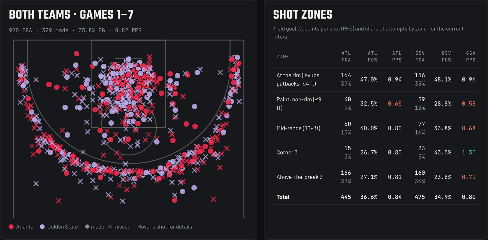
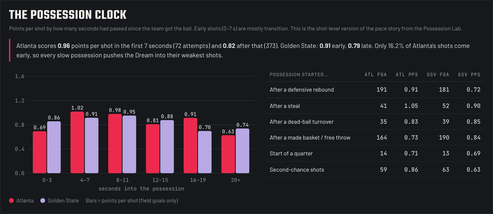
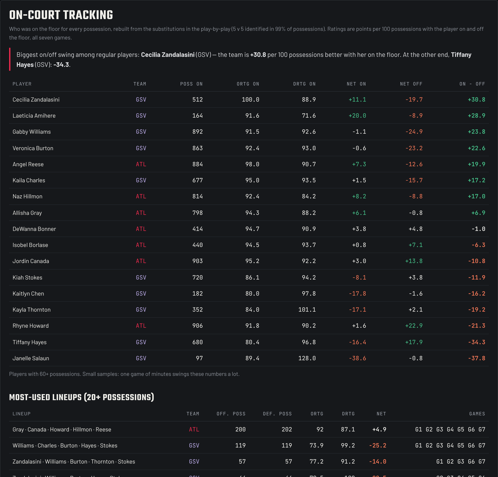
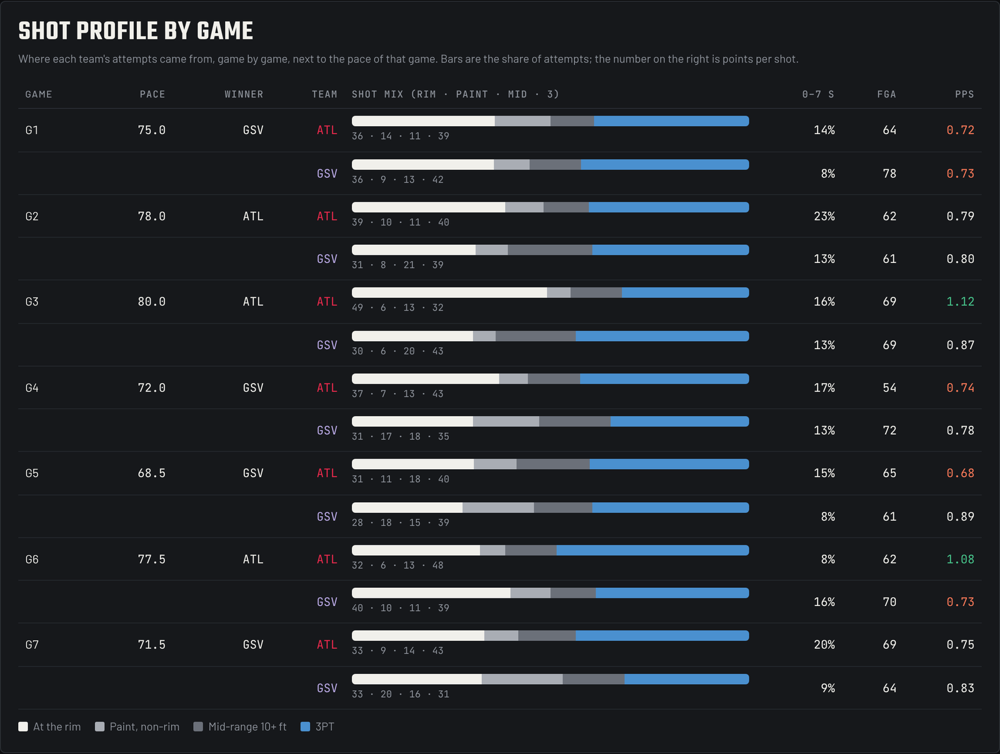

At a glance
Golden State Valkyries are the 2026 WNBA champions. They beat the Atlanta Dream 4–3, and the Possession Lab showed the rule that decided it: Golden State won all four games played below 76 possessions, Atlanta all three above.
Pace tells you that the tempo mattered. It doesn't tell you where on the court, or when in a possession, the series was won. So I built a second tool: the WNBA Finals Shot Lab. It takes the league's shot tracking — the x, y position of every field goal attempt — and ties each of the 920 shots to the possession it came from: how many seconds had passed since the team got the ball, how that possession started, and whether it was already a second chance. Then it rebuilds who was on the floor for every possession.
You can explore it yourself further down this page. Here's what it shows.
Part 1 — Two teams, almost the same shooting

Over seven games the two offenses ended up almost level. Atlanta's effective field goal percentage was 42.1%, Golden State's 40.0%. Both shot 26–27% from three on more than 180 attempts each — a cold series from deep. Both scored about 0.95 points per shot at the rim.
| Zone | ATL share | ATL PPS | GSV share | GSV PPS |
|---|---|---|---|---|
| At the rim | 37% | 0.94 | 33% | 0.96 |
| Paint, non-rim | 9% | 0.65 | 12% | 0.58 |
| Mid-range | 13% | 0.80 | 16% | 0.68 |
| Corner 3 | 3% | 0.80 | 5% | 1.30 |
| Above-the-break 3 | 37% | 0.81 | 34% | 0.71 |
The one real gap in shot quality is small in volume: Golden State's corner threes (23 attempts, 1.30 points per shot). The shot charts don't explain a 4–3 series on their own. The clock does.
Part 2 — The possession clock

Every shot in the Shot Lab carries a timestamp inside its possession. Both teams were clearly better early: Atlanta scored 0.91 points per shot in the first 15 seconds and 0.75 after that; Golden State 0.91 and 0.72. The late-clock shot is the worst shot in basketball, for everyone.
The difference is who lived there. Golden State took 58% of its shots 16 seconds or more into a possession. Atlanta took 43%. And game by game, the share tracks the result:
| Game | Pace | GSV shots at 16+ s | ATL shots at 16+ s | Winner |
|---|---|---|---|---|
| G1 | 75 | 58% | 44% | GSV |
| G2 | 78 | 52% | 45% | ATL |
| G3 | 80 | 51% | 35% | ATL |
| G4 | 72 | 56% | 46% | GSV |
| G5 | 68.5 | 72% | 38% | GSV |
| G6 | 77.5 | 54% | 52% | ATL |
| G7 | 71.5 | 69% | 42% | GSV |
In all four Golden State wins, 56% or more of its shots came late in the clock. In its three losses, 51–54%. Golden State didn't win by shooting better late — nobody did. It won by dragging the games into long possessions, where Atlanta's offense lost its edge too.
The early edge that looked decisive after Game 5 shrank by the end. Through five games Atlanta scored 1.11 points per shot in the first 7 seconds of a possession; in Game 7 its 14 early shots produced only 0.43 each, and over the series it settled at 0.96. Atlanta also scored best after a steal (1.05 points per shot on 41 shots) — the fastest kind of possession there is.
Part 3 — Who was on the floor
The WNBA doesn't publish optical player tracking, so the Shot Lab builds its own on-court tracking from the substitutions in the play-by-play. Both lineups are identified for 99% of the 1,045 possessions, which gives every player an on/off rating: how the team did per 100 possessions with her on the floor, against with her off.

- Cecilia Zandalasini was Golden State's biggest swing: +30.8 per 100 possessions on vs off. Gabby Williams (+23.8) and Veronica Burton (+22.6) follow.
- For Atlanta, Angel Reese (+19.9) and Naz Hillmon (+17.0) top the list.
- Golden State's most-used lineup (Hayes, Stokes, Williams, Charles, Burton) was −25.2 over 119 possessions. Swap Hayes for Zandalasini and the same group was +73.1 in 82 possessions.
- Atlanta's starting five (Gray, Canada, Howard, Hillmon, Reese) played 200 possessions together and finished +4.9.
What this doesn't tell us
- Seven games is a small sample. On/off and lineup numbers swing a lot on a few dozen possessions. Read them as signals, not verdicts.
- This is shot tracking, not player tracking. We know where each shot came from and who was on the floor, not where the defenders were. The league's tracking endpoints for closest defender, touches and matchups return no data for the WNBA.
- Late shots aren't always chosen. A late-clock shot can come from good defense as much as from a slow offense. That's exactly why it favoured the team that wanted slow games.
- Game 5 coordinates. The league's shot locations for Game 5 sit a couple of feet off the rim on layups, so "at the rim" also uses the shot type (layups, putbacks, tips within 8 ft).
Methodology
- Data: official shot chart (shotchartdetail: x, y, distance, zone and result of every field goal attempt) and play-by-play (PlayByPlayV3) of all seven games from the WNBA stats API — 920 shots, 2,953 events.
- Matching: each shot is matched to its play-by-play event by game, quarter, player, result and clock (±1 second). All 920 match.
- Possession context: seconds into possession = shot time minus the moment the team got the ball (defensive rebound, turnover, made basket or start of a quarter). Second chance = the possession already had an offensive rebound.
- On-court tracking: the starters of each quarter are the players who act before being subbed in; a player with no event in a whole stint is carried over from the previous or next quarter. On/off = team net rating per 100 possessions with the player on the floor minus with her off.
- Metrics: points per shot (PPS) = points from field goals ÷ attempts; eFG% = (field goals made + 0.5 × threes made) ÷ attempts.
Explore every shot
Everything in this piece comes from the WNBA Finals Shot Lab, the second tool I built from this series for my Master's in Sports Analytics at Escuela Universitaria Real Madrid – Universidad Europea. It runs right here — filter by game, team, player, quarter or possession clock and hover any shot.
Open the tool in full screen →
What you can do in it:
- The shot chart. All 920 attempts on the court, made or missed, or a zone heat map coloured by points per shot. Hover any shot to see the player, the clock and the possession it came from.
- Shot zones. Share of attempts, field goal % and points per shot for each team at the rim, in the paint, from mid-range, from the corners and above the break.
- The possession clock. Points per shot by seconds into the possession, and by how the possession started — defensive rebound, steal, made basket, dead-ball turnover.
- Shot profile by game. Each team's shot mix in every game, next to that game's pace.
- Players. Volume, efficiency, threes, rim attempts and early-clock shots for every player. Click one to put her shots on the chart.
- On-court tracking. On/off ratings for every regular and the ratings of the most-used lineups.

The code and data are open on GitHub. Start with the Possession Lab for the pace story, then come here to see where it happened.